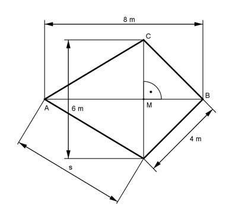

Pythagoras Aufgabe 76 Berechnen Sie die Länge der Seite s in cm.  Satz von Pythagoras im Dreieck MBC: MC = 6 m/2 = 3 m BC² = BM² + MC² |-MC² BM² = BC² - MC² BM² = 4² cm² - 3² cm² = 7 cm² |√ h = 2,7 cm Satz von Pythagoras im Dreieck AMC: AM = ACB – MB = 8 cm – 2,7 cm = 5,3 cm s² = MC² + AM² s² = 3² cm² + 5,3² s² = 9 cm² + 28,6 cm² = 37,6 cm² |√ s = 6,1 cm